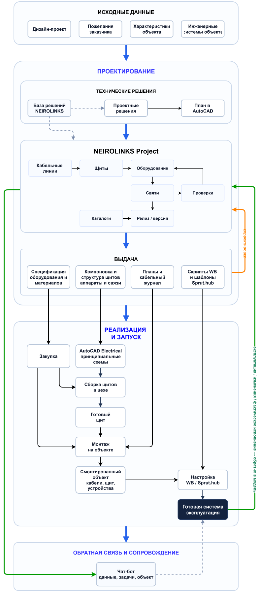

Подробная схема процесса
Целевая логика NEIROLINKS Project: от исходных данных и проектных решений до выдачи, реализации, настройки и эксплуатации.

На небольшом экране схему можно прокручивать горизонтально внутри блока.
Целевая логика NEIROLINKS Project: от исходных данных и проектных решений до выдачи, реализации, настройки и эксплуатации.

На небольшом экране схему можно прокручивать горизонтально внутри блока.